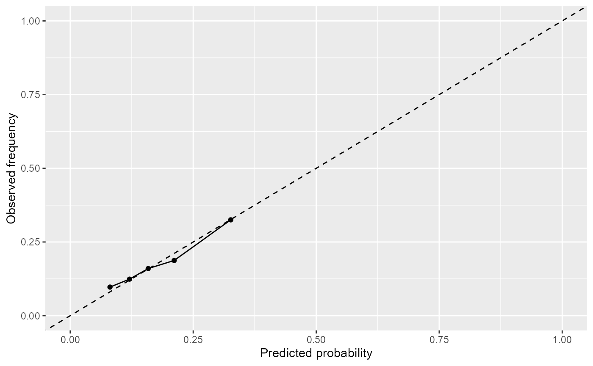

../Landmarking/vignettes/how_to_use.Rmd
how_to_use.RmdBelow is a step-by-step demonstration of how to use this package. This example looks at using risk assessments recorded at primary care practices to predict the 5-year risk of cardiovascular disease (CVD).
We will perform the landmarking analysis using both the LOCF and LME methods and compare the results of these two models. The example involves competing risks events in the form of the risk of death from other causes; the cause-specific model will therefore be used as the survival submodel. For more information about the landmark model please see isobelbarrott.github.io/Landmarking.
First of all, let’s take a look at the dataset we are going to analyse. This dataset is a combination of two datasets: one of these contains the longitudinal (repeat measures) data and one of these contains the time-to-event data.
The longitudinal (repeat measurements) data from CVD risk assessments is in long format. Each row corresponds to a different assessment and an individual may have multiple assessments. The dataset contains information about an individual’s ethnicity, smoking status, diabetes, and standardised systolic blood pressure (SBP). These were recorded at the patient age specified in response_time_sbp_stnd. The standardised total cholesterol to high density lipoprotein (HDL) ratio was also recorded as part of the assessment but was recorded at the patient age specified in response_time_tchdl_stnd, which is up to a month after the other variables were measured.
The time-to-event data indicates the time and status of event that each individual experiences. There are three types of events: censoring (this is due to loss to follow-up or the end of the study, indicated by status 0), CVD event (indicated by status 1), or death from other causes (indicated by status 2). It is important when using this package that 0 is used to indicate censoring, 1 to indicate the event of interest, and values 2 or above indicate different competing risks.
library(Landmarking)
set.seed(1)
data(data_repeat_outcomes)
head(data_repeat_outcomes)
#> id smoking diabetes ethnicity dob index sbp_stnd tchdl_stnd
#> 1 1 0 0 European 1957-03-26 1 0.6083674 0.462541398
#> 2 2 0 0 European 1952-11-12 1 -0.6701342 0.005126055
#> 3 3 1 0 European 1953-08-03 1 1.2431679 0.183656473
#> 4 3 1 0 European 1953-08-03 2 0.9569143 0.185134324
#> 5 3 1 0 European 1953-08-03 3 1.0044586 -0.391911821
#> 6 4 0 0 Pacific 1959-07-07 1 0.2846879 -0.080660875
#> response_time_tchdl_stnd response_time_sbp_stnd event_status event_time
#> 1 62.58727 62.57906 1 60.73112
#> 2 57.26762 57.21561 0 66.07927
#> 3 60.87611 60.79671 0 66.10580
#> 4 56.50376 56.46817 0 66.10580
#> 5 63.93977 63.92608 0 66.10580
#> 6 51.83299 51.81109 0 61.74113Looking further at these datasets we see that there are 3000 patients in this study, each with an average of 3.0103333 assessments.
length(unique(data_repeat_outcomes$id))
#> [1] 3000
mean(table(data_repeat_outcomes$id))
#> [1] 3.010333Moreover, we can see the breakdown of events
table(unique(data_repeat_outcomes[,c("id","event_status")])[,"event_status"])
#>
#> 0 1 2
#> 2538 429 33So 429 patients in the study (out of 3000) experienced a CVD event and 33 experienced death from other causes.
We are now ready to begin the analysis using the Landmarking package.
There are a couple of issues to deal with before we start, these stem from the fact that we wish to compare the LOCF and LME longitudinal model. We want to ensure that the same dataset is used for both of these models so that the comparison is fair.
The first issue is that the presence of NA values means that some individuals in the risk set do not have LOCF values for all the covariates. This means that the LOCF longitudinal model cannot be fitted for these individuals, however the LME longitudinal model can allow missing values in the random effects covariates. As we wish that the dataset that both models are fitted are the same, we should consider removing these individuals from the dataset.
Helpfully, the Landmarking package contains a function return_ids_with_LOCF to create a dataset with individuals with a LOCF for all covariates contained in the covariates parameter at landmark time x_L.
data_repeat_outcomes <-
return_ids_with_LOCF(
data_long = data_repeat_outcomes,
individual_id = "id",
covariates = c("ethnicity", "smoking", "diabetes", "sbp_stnd", "tchdl_stnd"),
covariates_time = c(rep("response_time_sbp_stnd", 4), "response_time_tchdl_stnd"),
x_L = c(60, 61)
)The second issue is to do with cross-validation, but we will deal with this once we have fitted the LOCF landmark model.
So we can now fit the landmark model using the LOCF longitudinal submodel. To demonstrate how to use the package, we use only landmark times 60 and 61 years old however we may wish to use more landmark times in practice. For more information about this function, see the Details section of the fit_LOCF_landmark_model documentation.
data_model_landmark_LOCF <-
fit_LOCF_landmark(
data_long = data_repeat_outcomes,
x_L = c(60, 61),
x_hor = c(65, 66),
covariates = c("ethnicity", "smoking", "diabetes", "sbp_stnd", "tchdl_stnd"),
covariates_time = c(rep("response_time_sbp_stnd", 4), "response_time_tchdl_stnd"),
k = 10,
individual_id = "id",
event_time = "event_time",
event_status = "event_status",
survival_submodel = "cause_specific"
)
#> Warning in FUN(X[[i]], ...): 132 individuals have been removed from the model
#> building as they are not in the risk set at landmark age 61
#> [1] "Fitting longitudinal submodel, landmark age 60"
#> [1] "Complete, landmark age 60"
#> [1] "Fitting survival submodel, landmark age 60"
#> Warning in coxph.fit(X, Y, istrat, offset, init, control, weights = weights, :
#> Loglik converged before variable 2,4 ; coefficient may be infinite.
#> Warning in coxph.fit(X, Y, istrat, offset, init, control, weights = weights, :
#> Loglik converged before variable 2 ; coefficient may be infinite.
#> Warning in coxph.fit(X, Y, istrat, offset, init, control, weights = weights, :
#> Loglik converged before variable 1,3,4 ; coefficient may be infinite.
#> Warning in coxph.fit(X, Y, istrat, offset, init, control, weights = weights, :
#> Loglik converged before variable 2 ; coefficient may be infinite.
#> Warning in coxph.fit(X, Y, istrat, offset, init, control, weights = weights, :
#> Loglik converged before variable 2 ; coefficient may be infinite.
#> Warning in coxph.fit(X, Y, istrat, offset, init, control, weights = weights, :
#> Loglik converged before variable 2 ; coefficient may be infinite.
#> Warning in coxph.fit(X, Y, istrat, offset, init, control, weights = weights, :
#> Loglik converged before variable 2 ; coefficient may be infinite.
#> Warning in coxph.fit(X, Y, istrat, offset, init, control, weights = weights, :
#> Loglik converged before variable 2 ; coefficient may be infinite.
#> Warning in coxph.fit(X, Y, istrat, offset, init, control, weights = weights, :
#> Loglik converged before variable 2 ; coefficient may be infinite.
#> Warning in coxph.fit(X, Y, istrat, offset, init, control, weights = weights, :
#> Loglik converged before variable 2 ; coefficient may be infinite.
#> [1] "Complete, landmark age 60"
#> [1] "Fitting longitudinal submodel, landmark age 61"
#> [1] "Complete, landmark age 61"
#> [1] "Fitting survival submodel, landmark age 61"
#> Warning in coxph.fit(X, Y, istrat, offset, init, control, weights = weights, :
#> Loglik converged before variable 1,3 ; coefficient may be infinite.
#> Warning in coxph.fit(X, Y, istrat, offset, init, control, weights = weights, :
#> Loglik converged before variable 1,3,4 ; coefficient may be infinite.
#> Warning in coxph.fit(X, Y, istrat, offset, init, control, weights = weights, :
#> Loglik converged before variable 1,3,4 ; coefficient may be infinite.
#> Warning in coxph.fit(X, Y, istrat, offset, init, control, weights = weights, :
#> Loglik converged before variable 1,3,4 ; coefficient may be infinite.
#> Warning in coxph.fit(X, Y, istrat, offset, init, control, weights = weights, :
#> Loglik converged before variable 1,3,4 ; coefficient may be infinite.
#> Warning in coxph.fit(X, Y, istrat, offset, init, control, weights = weights, :
#> Loglik converged before variable 1,3,4 ; coefficient may be infinite.
#> Warning in coxph.fit(X, Y, istrat, offset, init, control, weights = weights, :
#> Loglik converged before variable 1,3,4 ; coefficient may be infinite.
#> Warning in coxph.fit(X, Y, istrat, offset, init, control, weights = weights, :
#> Loglik converged before variable 1,3,4 ; coefficient may be infinite.
#> Warning in coxph.fit(X, Y, istrat, offset, init, control, weights = weights, :
#> Loglik converged before variable 1,3,4 ; coefficient may be infinite.
#> Warning in coxph.fit(X, Y, istrat, offset, init, control, weights = weights, :
#> Loglik converged before variable 1,3,4 ; coefficient may be infinite.
#> [1] "Complete, landmark age 61"We can see that fitting this model returns the warnings such as Loglik converged before variable 2 ; coefficient may be infinite.. Taking a look at the model fit contained in data_model_landmark_LOCF$model_survival, we can see the confidence intervals for certain folds is very large. This is due there being few observations for these covariates. However, as only the point estimate of the coefficient is needed to calculate the risk prediction, inaccurate standard error values is not a problem. Indeed we have obtained the risk predictions and can take a look at their distribution.
plot(
density(100 * data_model_landmark_LOCF[["60"]]$data$event_prediction),
xlab = "Predicted risk of CVD event (%)",
main = "Landmark age 60"
)Printing the object that has been outputted returns a list of datasets corresponding to each of the landmark groups. These contain the column event_prediction which indicates the risk prediction of the event of interest.
data_model_landmark_LOCF
#> $`60`
#> id smoking diabetes ethnicity sbp_stnd tchdl_stnd
#> 1 2 0 0 European -0.67013418 0.005126055
#> 2 3 1 0 European 0.95691425 0.185134324
#> 3 4 0 0 Pacific 0.28468785 -0.080660875
#> 4 6 0 0 Pacific 0.01195977 -0.009527314
#> 5 8 1 0 Chinese_other_asian 0.57615543 -0.263779371
#> 6 9 1 0 Chinese_other_asian 0.68745060 0.314483754
#> cross_validation_number event_status event_time event_prediction
#> 1 5 0 65.00000 0.18372278
#> 2 10 0 65.00000 0.15278193
#> 3 8 0 61.74113 0.10378522
#> 4 8 0 61.81972 0.11601665
#> 5 4 0 65.00000 0.09842226
#> 6 10 0 63.07539 0.08866377
#>
#> $`61`
#> id smoking diabetes ethnicity sbp_stnd tchdl_stnd
#> 1 2 0 0 European -0.67013418 0.005126055
#> 2 3 1 0 European 1.24316786 0.183656473
#> 3 4 0 0 Pacific 0.28468785 -0.080660875
#> 4 6 0 0 Pacific 0.01195977 -0.009527314
#> 5 8 1 0 Chinese_other_asian 0.57615543 -0.263779371
#> 6 9 1 0 Chinese_other_asian 0.68745060 0.314483754
#> cross_validation_number event_status event_time event_prediction
#> 1 5 0 66.00000 0.1436272
#> 2 10 0 66.00000 0.1563242
#> 3 8 0 61.74113 0.1259180
#> 4 8 0 61.81972 0.1325977
#> 5 4 0 66.00000 0.1124857
#> 6 10 0 63.07539 0.1247429The output also contains the prediction error for the model, which is assessed using the Brier score and C-index. The standard error for these estimates can be calculated by setting parameter b to the desired number of bootstrap samples.
data_model_landmark_LOCF[["60"]]$prediction_error
#> $c_index
#> [1] 0.6336452
#>
#> $c_index_standard_error
#> [1] NA
#>
#> $brier_score
#> [1] 0.1113331
#>
#> $brier_score_standard_error
#> [1] NA
data_model_landmark_LOCF[["61"]]$prediction_error
#> $c_index
#> [1] 0.5757325
#>
#> $c_index_standard_error
#> [1] NA
#>
#> $brier_score
#> [1] 0.1099324
#>
#> $brier_score_standard_error
#> [1] NAIn order to assess the performance of the model, there is also the plot method which creates a calibration plot which can assess the calibration of the model. The perfect prediction model will have points along the y=x line and deviations from this suggest poor calibration.
plot(x = data_model_landmark_LOCF, x_L = 60, n = 5)
Now we can move on to fitting the landmark model using the LME longitudinal submodel. For more information about this function, see the Details section of the fit_LME_landmark_model documentation. The variables standardised systolic blood pressure (SBP) and standardised total cholesterol to high density lipoprotein (HDL) ratio are continuous and repeatedly measured and so these are included as random effects in the LME model.
The second issue which was mentioned previously is related to cross-validation. In particular we wish to perform k-fold cross-validation using exactly the same folds for both LOCF and LME models to ensure a fair comparison. To do this we use the parameter cross_validation_df which uses a list of data frames that indicate which fold each individual belongs to. We create this list using the output of fit_LOCF_landmark_model.
cross_validation_list <- lapply(data_model_landmark_LOCF, "[[", i = 1)There are a couple of computational considerations to highlight about fitting the LME model. The parameter lme_control can be altered in order to change the default values of parameters (such as maximum number of iterations) for the algorithm which fits the LME model. Also setting standardise_time = TRUE standardises the values of the time variable and this helps fitting the LME model (see ?fit_LME_landmark_model).
We fit the LME landmark model in a similar way to the LOCF landmark model, but with a few extra parameters. Fitting the LME model can take some time so here we only use landmark age 60 for demonstration purposes.
data_model_landmark_LME <-
fit_LME_landmark(
data_long = data_repeat_outcomes[["60"]],
x_L = c(60),
x_hor = c(65),
cross_validation_df =
cross_validation_list,
fixed_effects = c("ethnicity", "smoking", "diabetes"),
fixed_effects_time =
"response_time_sbp_stnd",
random_effects = c("sbp_stnd", "tchdl_stnd"),
random_effects_time = c("response_time_sbp_stnd", "response_time_tchdl_stnd"),
individual_id = "id",
standardise_time = TRUE,
lme_control = nlme::lmeControl(maxIter =
100, msMaxIter = 100),
event_time = "event_time",
event_status = "event_status",
survival_submodel = "cause_specific"
)
#> [1] "Fitting longitudinal submodel, landmark age 60"
#> [1] "Complete, landmark age 60"
#> [1] "Fitting survival submodel, landmark age 60"
#> Warning in coxph.fit(X, Y, istrat, offset, init, control, weights = weights, :
#> Loglik converged before variable 2,4 ; coefficient may be infinite.
#> Warning in coxph.fit(X, Y, istrat, offset, init, control, weights = weights, :
#> Loglik converged before variable 2 ; coefficient may be infinite.
#> Warning in coxph.fit(X, Y, istrat, offset, init, control, weights = weights, :
#> Loglik converged before variable 1,3,4 ; coefficient may be infinite.
#> Warning in coxph.fit(X, Y, istrat, offset, init, control, weights = weights, :
#> Loglik converged before variable 2 ; coefficient may be infinite.
#> Warning in coxph.fit(X, Y, istrat, offset, init, control, weights = weights, :
#> Loglik converged before variable 2 ; coefficient may be infinite.
#> Warning in coxph.fit(X, Y, istrat, offset, init, control, weights = weights, :
#> Loglik converged before variable 2 ; coefficient may be infinite.
#> Warning in coxph.fit(X, Y, istrat, offset, init, control, weights = weights, :
#> Loglik converged before variable 2 ; coefficient may be infinite.
#> Warning in coxph.fit(X, Y, istrat, offset, init, control, weights = weights, :
#> Loglik converged before variable 2 ; coefficient may be infinite.
#> Warning in coxph.fit(X, Y, istrat, offset, init, control, weights = weights, :
#> Loglik converged before variable 2 ; coefficient may be infinite.
#> Warning in coxph.fit(X, Y, istrat, offset, init, control, weights = weights, :
#> Loglik converged before variable 2 ; coefficient may be infinite.
#> [1] "Complete, landmark age 60"Comparing the prediction error for the landmarking with LOCF and LME, we can see a slight improvement when the LME model is used.
data_model_landmark_LOCF[["60"]]$prediction_error
#> $c_index
#> [1] 0.6336452
#>
#> $c_index_standard_error
#> [1] NA
#>
#> $brier_score
#> [1] 0.1113331
#>
#> $brier_score_standard_error
#> [1] NA
data_model_landmark_LME[["60"]]$prediction_error
#> $c_index
#> [1] 0.7550631
#>
#> $c_index_standard_error
#> [1] NA
#>
#> $brier_score
#> [1] 0.08802139
#>
#> $brier_score_standard_error
#> [1] NAFinally, suppose that we wish to predict the risk of the event of interest for a new patient. We need to create a data frame that contains records of all the covariates that were used to form the landmark model. As cross-validation was used, it is necessary to specify which cross-validation fold to use in the prediction. It is possible to predict the risk of the event of interest at any time before the horizon time.
newdata <-
data.frame(
id = c(3001, 3001, 3001),
response_time_sbp_stnd = c(57, 58, 59),
smoking = c(0, 0, 0),
diabetes = c(0, 0, 0),
ethnicity = c("Indian", "Indian", "Indian"),
sbp_stnd = c(0.45, 0.87, 0.85),
tchdl_stnd = c(-0.7, 0.24, 0.3),
response_time_tchdl_stnd = c(57, 58, 59)
)
predict(
object = data_model_landmark_LME,
x_L = 60,
x_hor = 62,
newdata = newdata,
cv_fold = 1
)
#> id ethnicity smoking diabetes sbp_stnd tchdl_stnd sbp_stnd_slope
#> 1: 3001 Indian 0 0 0.5582313 -0.02973252 0.02788248
#> tchdl_stnd_slope event_prediction
#> 1: -0.01839017 0.04339261
predict(
object = data_model_landmark_LME,
x_L = 60,
x_hor = 64,
newdata = newdata,
cv_fold = 1
)
#> id ethnicity smoking diabetes sbp_stnd tchdl_stnd sbp_stnd_slope
#> 1: 3001 Indian 0 0 0.5582313 -0.02973252 0.02788248
#> tchdl_stnd_slope event_prediction
#> 1: -0.01839017 0.07621137